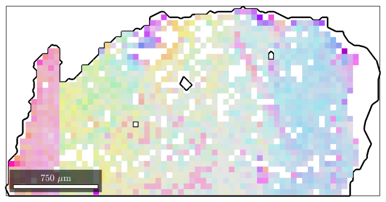

(method of EBSD)
smooth spatial EBSD
| ebsd |
mtexdata forsterite ebsd = ebsd('indexed'); % segment grains [grains,ebsd.grainId] = calcGrains(ebsd)
grains = grain2d
Phase Grains Pixels Mineral Symmetry Crystal reference frame
1 1080 152345 Forsterite mmm
2 515 26058 Enstatite mmm
3 1496 9064 Diopside 12/m1 X||a*, Y||b, Z||c
Properties: GOS, meanRotation
ebsd = EBSD
Phase Orientations Mineral Color Symmetry Crystal reference frame
1 152345 (81%) Forsterite light blue mmm
2 26058 (14%) Enstatite light green mmm
3 9064 (4.8%) Diopside light red 12/m1 X||a*, Y||b, Z||c
Properties: bands, bc, bs, error, mad, x, y, grainId
Scan unit : um
% find largest grains
largeGrains = grains(grains.grainSize>800)
ebsd = ebsd(largeGrains(1))
largeGrains = grain2d
Phase Grains Pixels Mineral Symmetry Crystal reference frame
1 56 85514 Forsterite mmm
2 2 1969 Enstatite mmm
Properties: GOS, meanRotation
ebsd = EBSD
Phase Orientations Mineral Color Symmetry Crystal reference frame
1 1453 (100%) Forsterite light blue mmm
Properties: bands, bc, bs, error, mad, x, y, grainId
Scan unit : um
figure plot(largeGrains(1).boundary,'linewidth',2) hold on oM = ipdfHSVOrientationMapping(ebsd); oM.inversePoleFigureDirection = mean(ebsd.orientations) * oM.whiteCenter; oM.colorStretching = 50; plot(ebsd,oM.orientation2color(ebsd.orientations)) hold off
| DocHelp 0.1 beta |